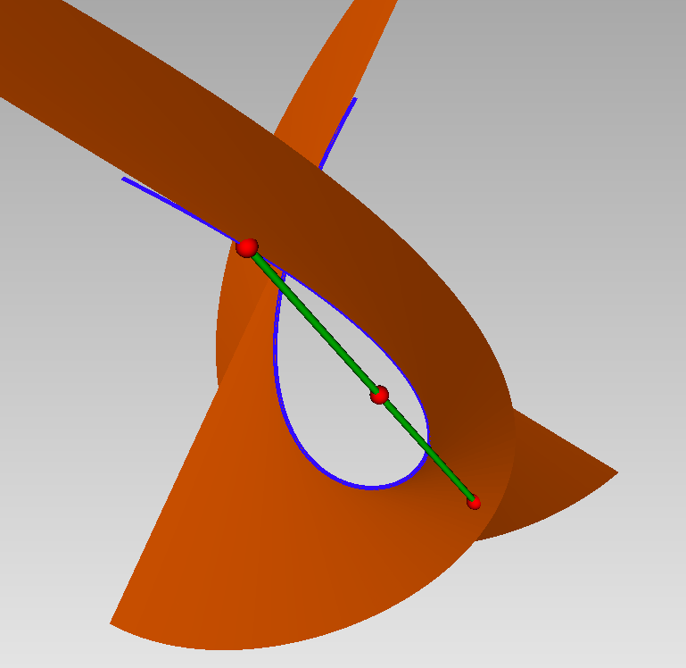

Generalized Additive Decomposition
The Generalized Additive Decomposition of a symmetric tensor $F$ of degree $d$ is a decomposition of the form
\[ F = \sum_{i=1}^{r} \omega_i L_i^{d-k_i}\]
where $\omega_i$ is a symmetric tensor of order $k_{i}$ and $L_i$ is a linear form (of degree $1$).
The function TensorDec.gad_decompose computes such a decomposition when the regularity of the associated apolar ideal is smaller than $d/2$ (see gad_decompose).
This decomposition consists in writing the form $F$ as a linear combination of points on the osculating varieties to the Veronese variety.
For instance, $F = \frac 1 2\,(x+y+z)^5 + (x-z)^4 \, (x+y)$ is a combination of a point $(x+y+z)^5$ on the Veronese variety (Osculating variety of order $0$) and a point $(x-z)^4*(x+y)$ on the tangential variety of the Veronese variety (Osculating variety of Order $1$) as illustrated here:

The blue curve is the Veronsese variety and the orange surface is the tangential variety.
How does it works ?
We illustrate the algorithm on the following example:
using LinearAlgebra, DynamicPolynomials, AlgebraicSolvers, TensorDec
X = @polyvar x y z
F = 0.5*(x+y+z)^5 + 0.3*(x-z)^4 * (x+y)\[ 0.5z^{5} + 2.8yz^{4} + 5.0y^{2}z^{3} + 5.0y^{3}z^{2} + 2.5y^{4}z + 0.5y^{5} + 2.8xz^{4} + 8.8xyz^{3} + 15.0xy^{2}z^{2} + 10.0xy^{3}z + 2.5xy^{4} + 3.8x^{2}z^{3} + 16.8x^{2}yz^{2} + 15.0x^{2}y^{2}z + 5.0x^{2}y^{3} + 6.8x^{3}z^{2} + 8.8x^{3}yz + 5.0x^{3}y^{2} + 1.3x^{4}z + 2.8x^{4}y + 0.8x^{5} \]
We first associate to $F$ is apolar series:
sigma = apolar_dual(F)0.5dz^5 + 0.5599999999999999dy*dz^4 + 0.5dy^2dz^3 + 0.5dy^3dz^2 + 0.5dy^4dz + 0.5dy^5 + 0.5599999999999999dx*dz^4 + 0.44000000000000006dx*dy*dz^3 + 0.5dx*dy^2*dz^2 + 0.5dx*dy^3*dz + 0.5dx*dy^4 + 0.38dx^2dz^3 + 0.56dx^2dy*dz^2 + 0.5dx^2dy^2dz + 0.5dx^2dy^3 + 0.6799999999999999dx^3dz^2 + 0.44000000000000006dx^3dy*dz + 0.5dx^3dy^2 + 0.26dx^4dz + 0.5599999999999999dx^4dy + 0.8dx^5We deduce the operators of multiplications $M$ by the variables using the Hankel or Catalecticant matrices, and computes the Schur joint factorization of $M$. This gives the points Xi, which are the coefficients of the linear forms $L_i$ of the GAD:
M = AlgebraicSolvers.mult_matrices(sigma)
Xi, ms, Z, Tr = AlgebraicSolvers.schur_dcp(M, 1.e-3)
L = real.([dot(X,Xi[:,j]) for j in 1:size(Xi,2)])2-element Vector{DynamicPolynomials.Polynomial{DynamicPolynomials.Commutative{DynamicPolynomials.CreationOrder}, MultivariatePolynomials.Graded{MultivariatePolynomials.LexOrder}, Float64}}:
-1.1358710060780677z - 1.1358710060780666y - 1.1358710060780663x
-2.8710851229190677z + 3.1224970289767814e-15y + 2.871085122919072xThese forms are proportional (up to machine precision) to $x+y+z$ and $x-z$. The sum of the multiplicities
mu = length.(ms)2-element Vector{Int64}:
1
2gives the GAD rank
sum(mu)3To recover the weights $\omega_i$, we compute the operators of multiplication by the variables in the local Artinian algebras associated to the points $L_i$, compute their nil-indices and deduce the degrees of the $\omega_i$:
LocM = local_mult_matrices(Tr, ms)
nilx = nil_index(LocM, Xi)
dg = [nilx[i]-1 for i in 1:size(Xi,2)]2-element Vector{Int64}:
0
1That is, the first weight $\omega_1$ is a constant, corresponding to the point on the Veronese variety, and the second weight $\omega_2$ is a linear form, corresponding to a point on the Tangential variety.
Finally we solve a Vandermonde-like system to find the coefficients of the weights $\omega_i$, knowing their degrees:
2-element Vector{DynamicPolynomials.Polynomial{DynamicPolynomials.Commutative{DynamicPolynomials.CreationOrder}, MultivariatePolynomials.Graded{MultivariatePolynomials.LexOrder}, Float64}}:
-0.2644386517923541
-4.457426533619092e-18z + 0.004415063757082037y + 0.004415063757082045xThe weight of degree $1$ is proportional (up to machine precision) to $x+y$.